Chapter 19 Appendix: R Tutorial
This serves as a gentle introduction to R, a statistical programming language. R is used throughout this textbook and is one of the most popular programming languages throughout the world, with applications in research, data science, biostatistics, and business, just to name a few.
19.1 Downloading and Installing R and RStudio
Before diving into R, you must first install R and RStudio onto your device. R is the programming language, and RStudio is the IDE (Integrated Development Environment) that makes makes it easy to code in R, see your results, and ask for help.
To install R, follow these steps:
- Go to https://cran.r-project.org/
- Under the "Download and Install R" heading, there are links to download R for various operating systems. Click the link that matches your operating system (Windows, Linux, or Mac)
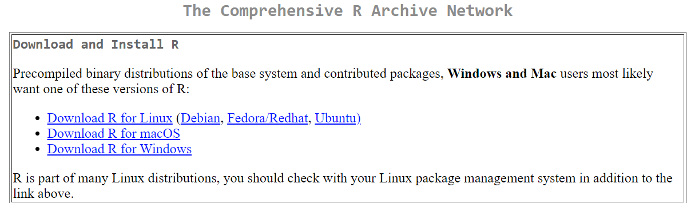
- After clicking the link, a new window will appear. On the first line, click the "install R for the first time" link.
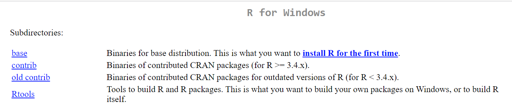
- A new window will appear, click on the "Download R" link (the first link at the top of the page). This link will be specific to the current version of R for your computer's operating system.
- Open the downloaded file.
- Select your preferred language, then follow the Instillation Wizard prompts.
- Click Finish, R is now installed on your computer.
To install R Studio, follow these steps:
- Go to https://posit.co/
- Click on "Download R Studio" in the top right-hand corner
- A new window will appear. Scroll down until you find the RStudio Desktop heading. Then click "Download RStudio"
- A new window will appear with the option to download R or RStudio. Click on the option to download RStudio.
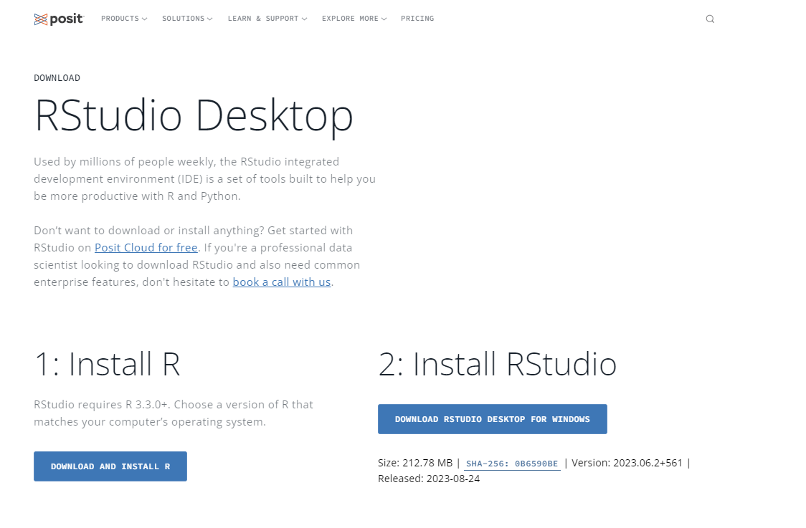
- A file will download. Click on the file, and the RStudio Installation Wizard will appear.
- Complete the Installation Wizard's prompts.
- RStudio is now installed on your computer.When you open RStudio, a window similar to the one below should appear.
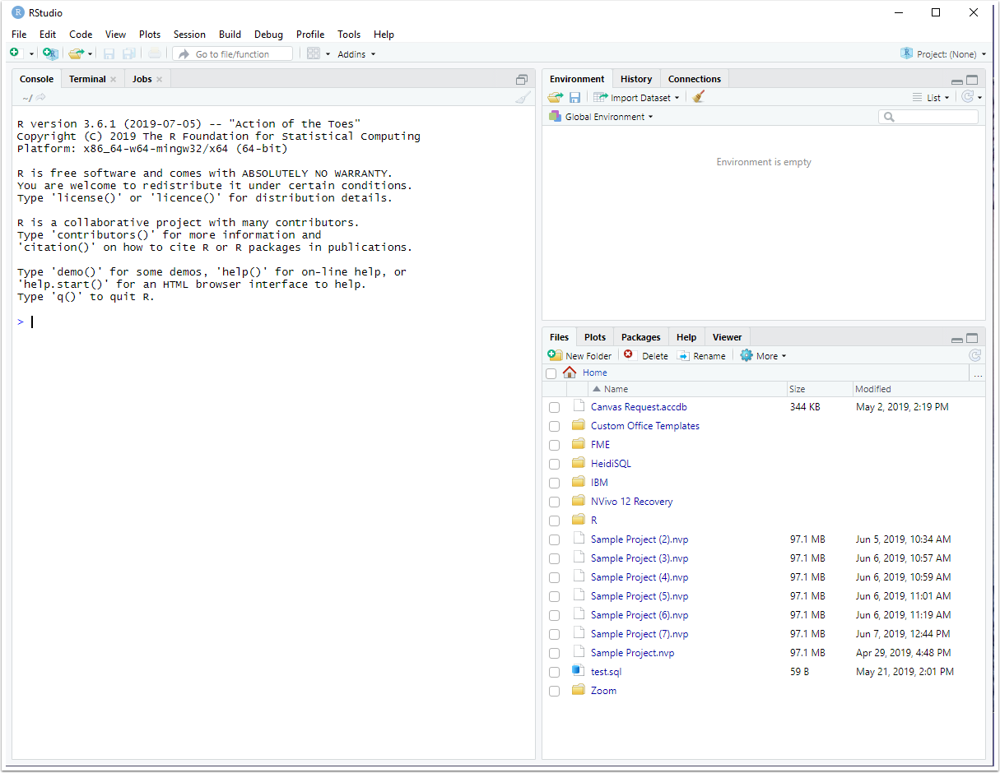
19.2 The Layout of RStudio
The following image is an example of what RStudio might look like when performing statistical analysis. RStudio has 4 panes, and knowledge of these panes will allow you to take advantage of all that RStudio has to offer.
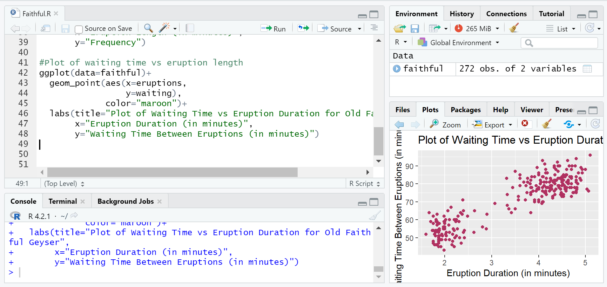
19.2.1 The Source Pane
The source pane allows users to edit and view a variety of different code files, including .R, .rmd, .qmd, .py, .css, or .txt. Once you create, edit, and test one of these files, you can then save the file for future work.
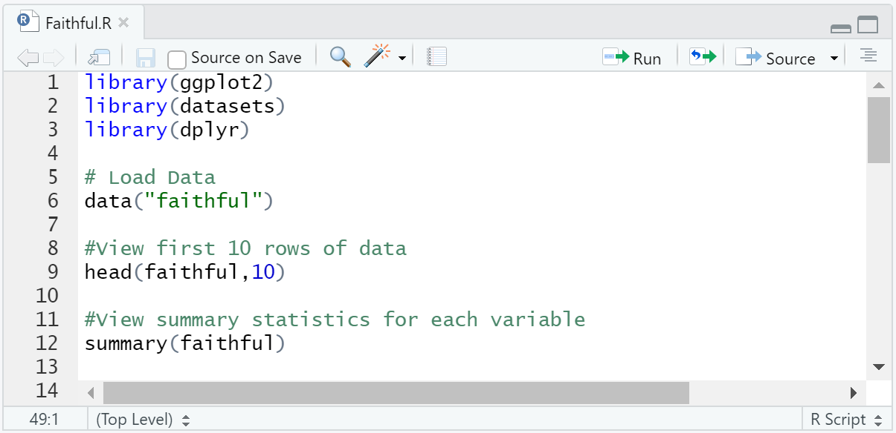
19.2.2 The Console Pane
The console pane allows users to interactively execute code. By default, the code is read and executed in the R programming language. Coding in the console is best for quick analysis or calculations, but any detailed analysis should be coded in the source panel as it allows the code to be saved.
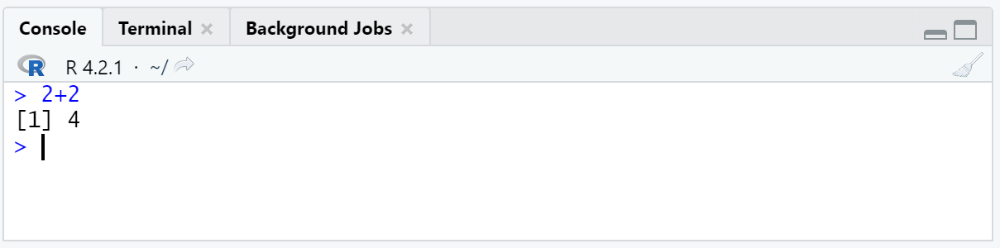
19.2.3 The Environments Pane
The environments pane contains a number of different tabs.
The "Environment" tab displays currently saved R objects.
The "History" tab displays R commands that were executed in the current coding session, along with a search bar for you to find previous commands.
The "Connections" tab shows connections to local or remote databases.
The "Tutorial" tab contains helpful tutorials on how to use R and its many functions.
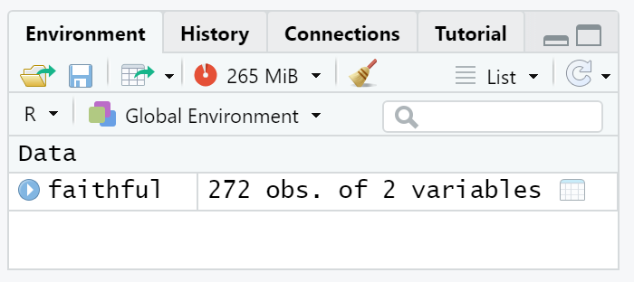
19.2.4 The Output Pane
The output pane displays the various outputs of your R programs. Its tabs include Files, Plots, Packages, Help, and Presentation.
The "Files" tab allows you to explore files within the current working directory of your R program.
The "Plots" tab displays the images created by R code in the current session.
The "Packages" tab displays the R packages that are installed on your computer, and allows you to search for new packages.
The "Help" tab allows you to search through R documentation.
The "Viewer" tab displays web content and and interactive visualizations.
The "Presentation" tab displays HTML slides.
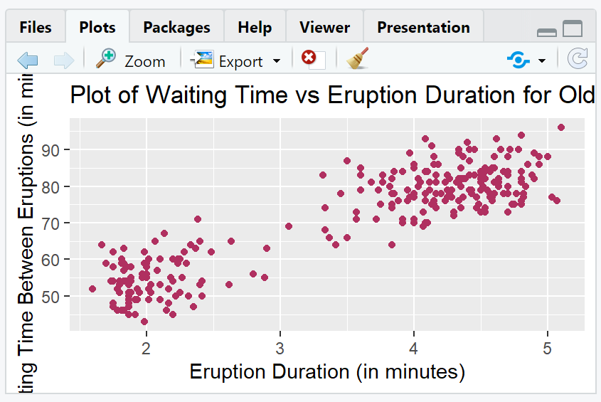
19.3 R Basics
Now that we have R and RStudio downloaded, and are familiar with the RStudio layout, we can begin learning the basics of R.
19.3.1 Creating a .R file
To begin coding in R, we must first create an R file. In RStudio, complete the following steps:
- Click on the "File" tab at the top-left corner
- Hover over "New File"
- Click on R Script
A new, untitled R script will now appear in your source pane.
19.3.2 Saving your .R file
To save your .R file, complete the following steps:
- Hover over the "Save current" icon at the top of the source pane, or press CTRL+S
- Navigate to the directory where you want to save your document. This directory will become your current working directory. R will set this as the default location for any files you read into R or any .R files that you save.
- You can always check your current working directory by typing getwd() in the console pane and pressing Enter.
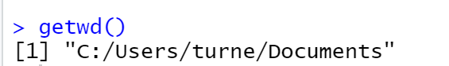
You can change your working directory at any time by completing these steps:
- Click on the "Session" tab at the top of RStudio
- Hover over "Set Working Directory"
- Click "Choose Directory"
- Then navigate to and choose your new current working directory.
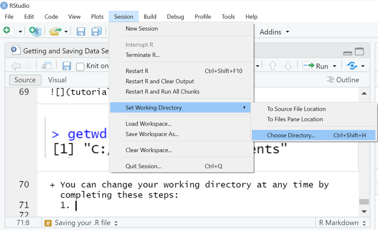
- Name your document, and press save.
19.3.3 Importing Data into R for Analysis
R allows for external datasets to be imported, or read, into the R environment for analysis.
19.3.3.1 Importing a .csv file
The read.csv function is used to import .csv files into R. The function has three main arguments:
- file, which is used to specify the file path and file name. The file should be located in your working directory.
- header, which is used to indicate whether the first row of the dataset consists of variable names or data. By default, header is set to TRUE.
- sep, which is used to specify the characters that separate data values in the dataset. , is the default separator value.
## [1] "/Users/adabney/Documents/GitHub/TAMU-Intro-Stats-Calc-Text/textbook"19.3.3.2 Importing a .txt file
The read.table() function is used to import files in table format. The function's arguments are identical to the read.csv function shown above, but with different default arguments:
- file, which is used to specify the file path and file name. The file should be located in your working directory.
- header, which is used to indicate whether the first row of the dataset consists of variable names or data. By default, header is set to FALSE.
- sep, which is used to specify the characters that separate data values in the dataset. "" "", or a single white space, is the default separator value.
## [1] "/Users/adabney/Documents/GitHub/TAMU-Intro-Stats-Calc-Text/textbook"19.3.4 Coding in RStudio
You can type your code into the source pane. Whenever you want to save your code, press the save button or perform Ctrl+S. The source pane will execute your code when you press the "Run" button at the top of the pane. The code is interpreted and executed using R, with the output displayed in the console.
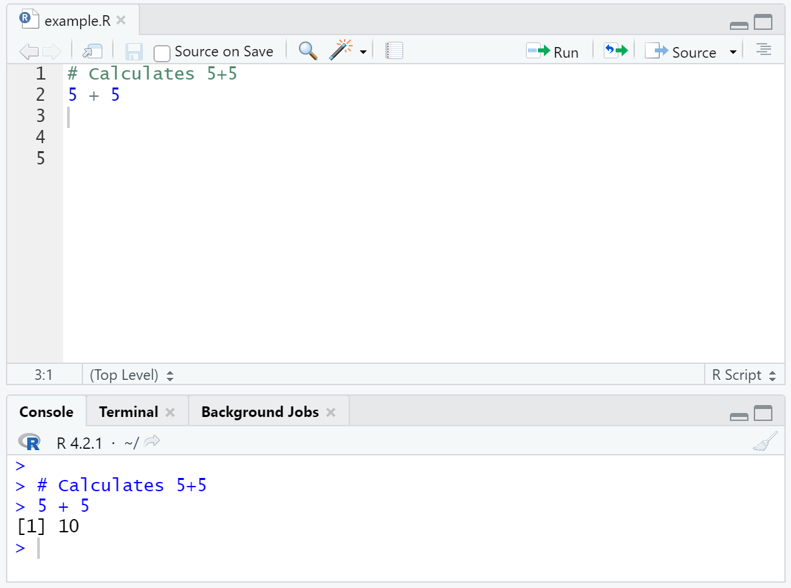
19.3.6 Arithmetic in R
Some of the most simple operations that R can perform include basic arithmetic.
These are some of the most prevalent arithmetic operators:
- Addition: +
## [1] 10- Subtraction: -
## [1] 1- Multiplication: *
## [1] 10- Division: /
## [1] 3.333333- Modulus: %%
## [1] 1- Exponentiation
## [1] 2519.3.7 Variables and Variable Assignment
A variable is a name given to a memory location on your computer that can be used to store data.
To assign a value to a variable, use the <- sign.
Variables are created when you assign values to them.
To print a variable's value, type the name of the variable.
## [1] 5Arithmetic operators can be applied to variables. The operators act on the values stored in the variables.
## [1] 5## [1] 10## [1] 1519.3.8 Data Types in R
In the above example, addition was performed between two numeric variables. What if addition was performed between one numeric variable and a variable of a different type?
## [1] 5## [1] "ten"## Error in `x + y`:
## ! non-numeric argument to binary operatorThe addition between x and y results in an error because addition can only be performed between two numeric variables. In this case, x is a numeric variable and y is a string variable.
Here is a list of the basic data types frequently used in R:
- Numerics: Decimal values like 3.14, 10, and 55.7
- Integers: Whole number values, like 5, 10, 1000 Integer values can also be numeric values. That is, 10 can be a numeric or integer type. To ensure that a value is stored as an integer, place an L after the number.
- Complex: Complex numbers, like 10+3i, where i is imaginary
- Characters: Text or string values, like "statistics"
- Logical: Otherwise known as boolean values. Either TRUE or FALSE
To check a variable's data type, use the class() function.
## [1] "numeric"## [1] "integer"## [1] "complex"## [1] "character"## [1] "logical"19.3.9 Vectors
R makes use of various data structures to store data. The most basic of these structures is the vector.
Vectors are one dimensional arrays (tables) that can hold items that are of the same type. In other words, vectors are simply a list of numeric, character, or logical data.
19.3.9.1 Creating Vectors
The combine function, c(), is used to create vectors. Place the values of the vector, separated by commas, within the function's parentheses.
## [1] 55.2 3.0 10000.0## [1] "bananas" "grapes" "apples" "oranges"## [1] FALSE TRUE TRUE FALSEUse the : operator to create a vector of a sequence of values.
## [1] 10 11 12 13 14 15 16 17 18 19 20Use the seq() function to create vector of a sequence of values with a custom interval.
## [1] 10 25 40 55 70 85 10019.3.9.2 Naming Elements of A Vector
Use the names() function to give names to the elements of a vector. The name of each element will be printed above its value.
## Brian Sophia Zachary Anne
## "A" "A" "C" "D"19.3.9.3 Vector Length
Use the length() function to display the number of elements in a vector.
## [1] 519.3.9.4 Sort a Vector
Use the sort() function to sort a vector alphabetically or numerically.
## [1] "baseball" "basketball" "football" "hockey"## [1] 1 2 3 4 5 10## [1] 10 5 4 3 2 119.3.9.5 Repeat a Vector
Use the rep() function to repeat each element of a vector, or repeat an entire vector, a specified number of times.
## [1] "bananas" "bananas" "bananas" "grapes" "grapes" "grapes" "oranges"
## [8] "oranges" "oranges"## [1] "bananas" "grapes" "oranges" "bananas" "grapes" "oranges" "bananas"
## [8] "grapes" "oranges"19.3.9.6 Vector Arithmetic
When performing arithmetic between two vectors, the arithmetic is done in an element-wise fashion. That is, the first element of the first vector is added/subtracted/divided/multiplied to/by the first element of the second vector, then the second element of the first vector is added/subtracted/divided/multiplied to/by the second element of the second vector, etc.
## [1] 1 2 3 4## [1] 4 5 6 7## [1] 5 7 9 11## [1] -3 -3 -3 -3If you want to add all of the elements in a single vector together, use the sum() function
## [1] 1 2 3 4## [1] 1019.3.9.7 Subsetting a Vector
Subsetting is the process of selecting certain elements of a data structure. Double brackets ([]) are used to select certain elements of a vector. To select a certain element, type the index of the element between the double brackets.
R starts it's index at 1, not 0. If you want to select the first element of a vector, you must place a 1 within the square brackets
## [1] "bananas"## [1] "oranges"## [1] "oranges"You can select multiple elements of a vector by putting a vector of the positions you want to subset between the square brackets.
## [1] "Texas" "Virginia"## [1] "Virginia" "Florida"## [1] "Oklahoma" "Virginia" "Maryland" "Florida"19.3.10 Logical Operators in R
The logical (comparison) operators in R are:
- <: Less than
- >: Greater than
- <=: Less than or equal to
- >=: Greater than or equal to
- ==: Equal to
- !=: Not equal to
Logical operators return boolean (TRUE or FALSE) values.
You can combine logical operators using & (and), | (or), and ! (not).
## [1] TRUE## [1] TRUE## [1] FALSE## [1] FALSESome other helpful logical operators are: * any() (TRUE if any element meets the condition) * all() (TRUE if all elements meet the condition) * %in% (TRUE if an element is in the vector being searched)
## [1] TRUE## [1] FALSE## [1] TRUE19.3.10.1 NAs and is.na()
is.na() is another logical operator that deserves special attention. NA stands for not available and means that a data value is missing. You can use is.na() to check whether a data value is missing.
NOTE: NA and NaN are different values. NaN stands for "not a number," and is treated differently than NA within R"
## [1] TRUE19.3.11 Matrices in R
A matrix is an collection of elements of the same data type (numeric, character, or logical) with a fixed number of rows and columns (i.e., 2-dimensional). Matrices are indexed by paired integers (i,j).
Matrices are created using the matrix() function. The matrix function has many arguments, but here are the three that you will use the most:
- data is a vector of data that R will arrange using rows and columns.
- nrow, is the number of rows in the matrix.
- byrow is a logical argument indicating whether R should fill the matrix by rows or columns. The argument is set to FALSE by default (i.e., the matrix is filled by columns).
## [1] "matrix" "array"## [1] "matrix" "array"19.3.11.1 Summing rows and columns in a matrix
R has two functions rowSums() and colSums(), that allow you to sum the rows or columns of the matrix, respectively.
## [,1] [,2] [,3] [,4] [,5]
## [1,] 5 8 11 14 17
## [2,] 6 9 12 15 18
## [3,] 7 10 13 16 19## [1] 55 60 65## [1] 18 27 36 45 5419.3.11.2 Joining/Combining Matrices
You can join/combine matrices by rows using the rbind() function, or by columns using the cbind() function. If combining by rows, the matrices must have the same number of rows, and if combining by columns, the matrices must have the same number of columns.
## [,1] [,2] [,3] [,4] [,5]
## [1,] 5 8 11 14 17
## [2,] 6 9 12 15 18
## [3,] 7 10 13 16 19## [,1] [,2] [,3] [,4] [,5]
## [1,] 25 28 31 34 37
## [2,] 26 29 32 35 38
## [3,] 27 30 33 36 39## [,1] [,2] [,3] [,4] [,5]
## [1,] 5 8 11 14 17
## [2,] 6 9 12 15 18
## [3,] 7 10 13 16 19
## [4,] 25 28 31 34 37
## [5,] 26 29 32 35 38
## [6,] 27 30 33 36 39## [,1] [,2] [,3] [,4] [,5] [,6] [,7] [,8] [,9] [,10]
## [1,] 5 8 11 14 17 25 28 31 34 37
## [2,] 6 9 12 15 18 26 29 32 35 38
## [3,] 7 10 13 16 19 27 30 33 36 3919.3.11.3 Subsetting a matrix
Just like with vectors, you can subset a matrix with double brackets ([]).
However, because matrices are two-dimensional, you must include both the row and column number associated with the element you want to extract.
When subsetting, the row number comes first, followed by a comma, then the column number: [i,j]
## [,1] [,2] [,3] [,4]
## [1,] "a" "c" "e" "g"
## [2,] "b" "d" "f" "h"## [1] "f"## [1] "c" "e"## [1] "a" "c" "e" "g"## [1] "a" "b"19.3.11.4 Matrix Arithmetic
Similar to vector arithmetic, matrix arithmetic is performed in an element-wise fashion.
## [,1] [,2]
## [1,] 1 6
## [2,] 2 7
## [3,] 3 8
## [4,] 4 9
## [5,] 5 10## [,1] [,2]
## [1,] 11 16
## [2,] 12 17
## [3,] 13 18
## [4,] 14 19
## [5,] 15 20## [,1] [,2]
## [1,] 12 22
## [2,] 14 24
## [3,] 16 26
## [4,] 18 28
## [5,] 20 30## [,1] [,2]
## [1,] 3 18
## [2,] 6 21
## [3,] 9 24
## [4,] 12 27
## [5,] 15 30## [,1] [,2]
## [1,] 0.09090909 0.3750000
## [2,] 0.16666667 0.4117647
## [3,] 0.23076923 0.4444444
## [4,] 0.28571429 0.4736842
## [5,] 0.33333333 0.500000019.3.12 Factors in R
In R, a factor is a vector of values, each associated with a label. These unique labeled values are the levels of the factor. Factors are used to store categorical variables for data analysis.
You can create a factor with a character vector, and R will interpret the characters as the labels for the levels of the factor.
The factor() function is used to create factors.
## [1] Monday Tuesday Wednesday Thursday Friday
## Levels: Friday Monday Thursday Tuesday Wednesday19.3.12.1 Nominal Categorical Variables
Nominal categorical variables are variables with categories that cannot be ordered. That is, there is no way to say that one category is greater than or less than the other. The factor() function creates nominal categorical variables by default
19.3.12.2 Ordinal Categorical Variables
Ordinal categorical variables are variables with categories that can be ordered. To create an ordinal categorical variable, set the order argument in the factor() function to TRUE
## [1] very slow slow fast very fast fast slow very slow
## Levels: very slow < slow < fast < very fast19.3.12.3 Levels
When importing a data set, you may find that the levels used in the data set are already defined. R allows you to change the names of these levels using the levels() function.
## [1] r s h t
## Levels: h r s t## [1] rain snow hail tornado
## Levels: hail rain snow tornadoCAUTION: R automatically sorts levels into alphabetical order. Thus, when redefining levels, ensure they are in alphabetical order to properly match the new levels with the pre-existing ones.
19.3.13 Data Frames in R
A data frame is a 2-dimensional data structure, commonly used to store datasets. The data frame stores the variables of a data frame as columns and the observations as rows.
Unlike vectors and matrices, data frames can store values of different data types. However, each column must have the same data type. In other words, different columns can have different data types, but the values within a single column must have the same data type.
An example of a data frame is the iris dataset housed in R.
19.3.13.1 Creating a Data Frame
The data.frame() function will create a data frame with specified vectors as columns.| strings | numerical | logical |
|---|---|---|
| blue | 1 | FALSE |
| orange | 2 | TRUE |
| yellow | 3 | TRUE |
| green | 4 | FALSE |
## [1] "data.frame"19.3.13.2 Viewing a Data Frame
To view your data frame, you will want to utilize two functions:
- head(data, n) shows the first n rows of a specified data frame.
- tail(data, n) shows the last n rows of a specified data frame
| Sepal.Length | Sepal.Width | Petal.Length | Petal.Width | Species |
|---|---|---|---|---|
| 5.1 | 3.5 | 1.4 | 0.2 | setosa |
| 4.9 | 3.0 | 1.4 | 0.2 | setosa |
| 4.7 | 3.2 | 1.3 | 0.2 | setosa |
| 4.6 | 3.1 | 1.5 | 0.2 | setosa |
| 5.0 | 3.6 | 1.4 | 0.2 | setosa |
| Sepal.Length | Sepal.Width | Petal.Length | Petal.Width | Species | |
|---|---|---|---|---|---|
| 146 | 6.7 | 3.0 | 5.2 | 2.3 | virginica |
| 147 | 6.3 | 2.5 | 5.0 | 1.9 | virginica |
| 148 | 6.5 | 3.0 | 5.2 | 2.0 | virginica |
| 149 | 6.2 | 3.4 | 5.4 | 2.3 | virginica |
| 150 | 5.9 | 3.0 | 5.1 | 1.8 | virginica |
19.3.13.3 Viewing the Structure of a Data Frame
The str() function outputs the structure of your dataset. The structure of your data set includes:
- The total number of observations
- The total number of variables
- A list of variable names
- The first few observations
- The data type of each variable
## 'data.frame': 150 obs. of 5 variables:
## $ Sepal.Length: num 5.1 4.9 4.7 4.6 5 5.4 4.6 5 4.4 4.9 ...
## $ Sepal.Width : num 3.5 3 3.2 3.1 3.6 3.9 3.4 3.4 2.9 3.1 ...
## $ Petal.Length: num 1.4 1.4 1.3 1.5 1.4 1.7 1.4 1.5 1.4 1.5 ...
## $ Petal.Width : num 0.2 0.2 0.2 0.2 0.2 0.4 0.3 0.2 0.2 0.1 ...
## $ Species : Factor w/ 3 levels "setosa","versicolor",..: 1 1 1 1 1 1 1 1 1 1 ...19.3.13.4 Subsetting a Data Frame
Similar to matrices, you can subset a data frame with double brackets ([]).
You must include both the row and column number associated with the element you want to extract.
When subsetting, the row number comes first, followed by a comma, then the column number: [i,j]
You can also subset using the column/variable name: [i, "name"] or dataframe$columnname to subset an entire column.
## [1] 1.4## [1] 5| Sepal.Length | Sepal.Width | Petal.Length | Petal.Width | Species | |
|---|---|---|---|---|---|
| 10 | 4.9 | 3.1 | 1.5 | 0.1 | setosa |
## [1] 3.5 3.0 3.2 3.1 3.6 3.9 3.4 3.4 2.9 3.1 3.7 3.4 3.0 3.0 4.0 4.4 3.9 3.5
## [19] 3.8 3.8 3.4 3.7 3.6 3.3 3.4 3.0 3.4 3.5 3.4 3.2 3.1 3.4 4.1 4.2 3.1 3.2
## [37] 3.5 3.6 3.0 3.4 3.5 2.3 3.2 3.5 3.8 3.0 3.8 3.2 3.7 3.3 3.2 3.2 3.1 2.3
## [55] 2.8 2.8 3.3 2.4 2.9 2.7 2.0 3.0 2.2 2.9 2.9 3.1 3.0 2.7 2.2 2.5 3.2 2.8
## [73] 2.5 2.8 2.9 3.0 2.8 3.0 2.9 2.6 2.4 2.4 2.7 2.7 3.0 3.4 3.1 2.3 3.0 2.5
## [91] 2.6 3.0 2.6 2.3 2.7 3.0 2.9 2.9 2.5 2.8 3.3 2.7 3.0 2.9 3.0 3.0 2.5 2.9
## [109] 2.5 3.6 3.2 2.7 3.0 2.5 2.8 3.2 3.0 3.8 2.6 2.2 3.2 2.8 2.8 2.7 3.3 3.2
## [127] 2.8 3.0 2.8 3.0 2.8 3.8 2.8 2.8 2.6 3.0 3.4 3.1 3.0 3.1 3.1 3.1 2.7 3.2
## [145] 3.3 3.0 2.5 3.0 3.4 3.0## [1] 0.2 0.2 0.2 0.2 0.2 0.4 0.3 0.2 0.2 0.1 0.2 0.2 0.1 0.1 0.2 0.4 0.4 0.3
## [19] 0.3 0.3 0.2 0.4 0.2 0.5 0.2 0.2 0.4 0.2 0.2 0.2 0.2 0.4 0.1 0.2 0.2 0.2
## [37] 0.2 0.1 0.2 0.2 0.3 0.3 0.2 0.6 0.4 0.3 0.2 0.2 0.2 0.2 1.4 1.5 1.5 1.3
## [55] 1.5 1.3 1.6 1.0 1.3 1.4 1.0 1.5 1.0 1.4 1.3 1.4 1.5 1.0 1.5 1.1 1.8 1.3
## [73] 1.5 1.2 1.3 1.4 1.4 1.7 1.5 1.0 1.1 1.0 1.2 1.6 1.5 1.6 1.5 1.3 1.3 1.3
## [91] 1.2 1.4 1.2 1.0 1.3 1.2 1.3 1.3 1.1 1.3 2.5 1.9 2.1 1.8 2.2 2.1 1.7 1.8
## [109] 1.8 2.5 2.0 1.9 2.1 2.0 2.4 2.3 1.8 2.2 2.3 1.5 2.3 2.0 2.0 1.8 2.1 1.8
## [127] 1.8 1.8 2.1 1.6 1.9 2.0 2.2 1.5 1.4 2.3 2.4 1.8 1.8 2.1 2.4 2.3 1.9 2.3
## [145] 2.5 2.3 1.9 2.0 2.3 1.819.3.14 Lists in R
Unlike the previous data structures we have introduced, a list can contain both different data types and different data structures. In other words, the elements of a list can include vectors, matrices, data frames, and even other lists!
Lists are the largest and most flexible data structure in R.
Lists are ordered (i.e., they have an index) and can be manipulated.
19.3.14.1 Creating a List
The list() function is used to create a list. The arguments of the list function are the components of the list. These components can be any data structure, including other lists.
## [[1]]
## [1] "a" "b" "c"
##
## [[2]]
## [,1] [,2]
## [1,] 1 6
## [2,] 2 7
## [3,] 3 8
## [4,] 4 9
## [5,] 5 10
##
## [[3]]
## Sepal.Length Sepal.Width
## 1 5.1 3.5
## 2 4.9 3.0
## 3 4.7 3.2
## 4 4.6 3.1
## 5 5.0 3.6You can also create a named list, where each element in your list has a name.
## $vector
## [1] "a" "b" "c"
##
## $matrix
## [,1] [,2]
## [1,] 1 6
## [2,] 2 7
## [3,] 3 8
## [4,] 4 9
## [5,] 5 10
##
## $dataframe
## Sepal.Length Sepal.Width
## 1 5.1 3.5
## 2 4.9 3.0
## 3 4.7 3.2
## 4 4.6 3.1
## 5 5.0 3.619.3.14.2 Subsetting Lists
Unlike vectors, matrices, and data frames, lists have layers of components and elements. The first layer is the list of data structures. Then, within each data structure is a separate index of elements.
Since lists are have multiple layers of elements, we can subset them in three ways:
- Double brackets [[]]
- Single brackets []
- Dollar sign $
How you subset your list depends on what element you want to extract. The following example illustrates this point:
## [[1]]
## [1] "a" "b" "c"
##
## [[2]]
## [,1] [,2]
## [1,] 1 6
## [2,] 2 7
## [3,] 3 8
## [4,] 4 9
## [5,] 5 10
##
## [[3]]
## Sepal.Length Sepal.Width
## 1 5.1 3.5
## 2 4.9 3.0
## 3 4.7 3.2
## 4 4.6 3.1
## 5 5.0 3.6## [1] "a" "b" "c"## [1] 2 7## [1] 3.5 3.0 3.2 3.1 3.619.3.15 Statistics in R
R is a statistical programming language, which means that it was created for use in statistical analysis. As such, R has a variety of statistical functions excellent for dataset analysis. Here are a few basic functions that are widespread across R:
- mean()
The mean function is used to calculate the arithmetic mean of R objects.
## [1] 4.5
- median()
Computes the median of an R object
## [1] 3.5
- min()
Returns the minimum of the input values
## [1] 1
- max()
Returns the maximum of the input values
## [1] 10
- sd()
Returns the standard deviation of an object of values
## [1] 4.041452
- var()
Computes the variance of an object of values
## [1] 16.33333
- IQR()
Computes the interquartile range of the inputted values
## [1] 8.25
- quantile()
The quantile function outputs the quantiles corresponding to specified probabilities.
## 25% ## 4.25## 75% ## 12.5
- summary()
The summary function returns the minumum, first quantile, median, mean, third quantile, and maximum for each variable in a dataset.
## Sepal.Length Sepal.Width Petal.Length Petal.Width ## Min. :4.300 Min. :2.000 Min. :1.000 Min. :0.100 ## 1st Qu.:5.100 1st Qu.:2.800 1st Qu.:1.600 1st Qu.:0.300 ## Median :5.800 Median :3.000 Median :4.350 Median :1.300 ## Mean :5.843 Mean :3.057 Mean :3.758 Mean :1.199 ## 3rd Qu.:6.400 3rd Qu.:3.300 3rd Qu.:5.100 3rd Qu.:1.800 ## Max. :7.900 Max. :4.400 Max. :6.900 Max. :2.500 ## Species ## setosa :50 ## versicolor:50 ## virginica :50 ## ## ##
- cor()
Returns the correlation between two variables.
## [1] -0.1175698
- table()
Returns the counts of categorical variables in a dataset.
## ## 3 4 5 ## 15 12 5
- ?
- Type a question mark in front of function to access the R documentation for that function.
19.3.16 Visualizations in R
R comes with a variety of functions that allow users to create detailed and descriptive data visualizations. This sections will show you how to get started with data visualizations in R.
19.3.16.1 Scatterplots
The plot() function is used to create scatterplots.
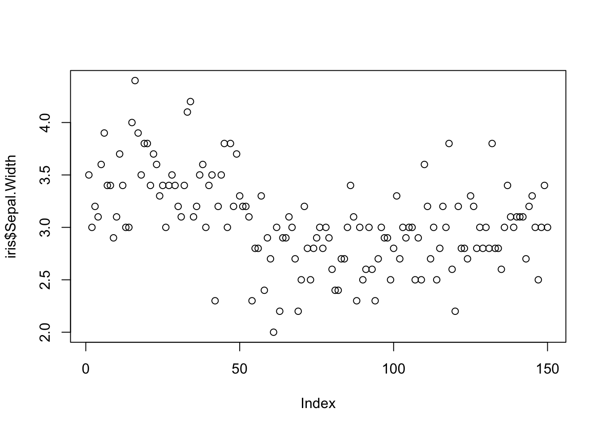
Since we are only plotting one variable, R plotted the Sepal Width values against an index. The index is the order of the Sepal Width observations in the iris dataset. The axis titles were automatically generated by R.
The plot() function can also be used to plot two variables against each other.
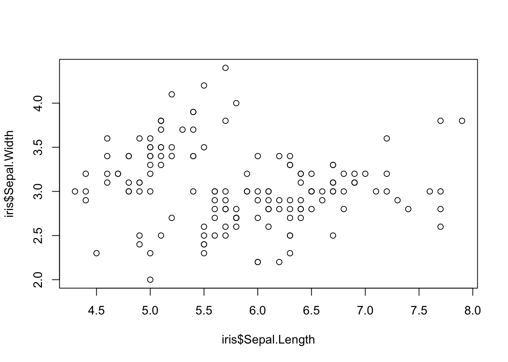

- There are four arguments in all R plotting functions that can be used to customize a plot.
- The main argument is used to change the title
- The xlab argument is used to change the x-axis title
- The ylab argument is used to change the y-axis title
- The col argument is used to change the color of the symbols in your plot.
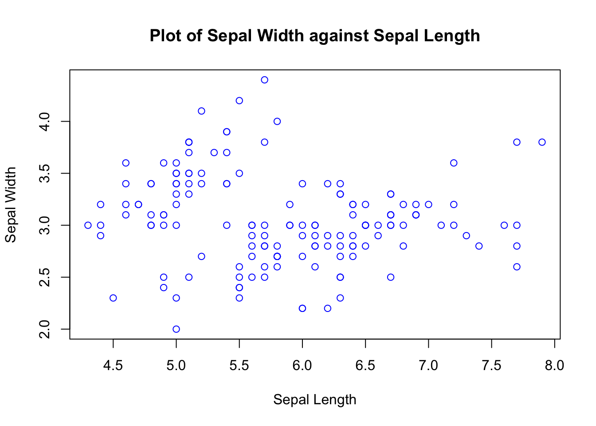
19.3.16.2 Histograms
The hist() function creates a histogram out of a numeric vector.
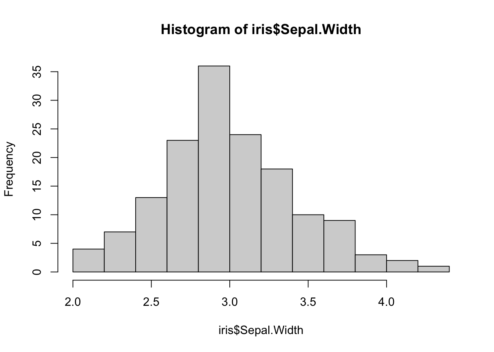
The hist() function automatically creates the breakpoints within the histogram. You can customize the breakpoints by inputting a vector of breaks into the break argument.
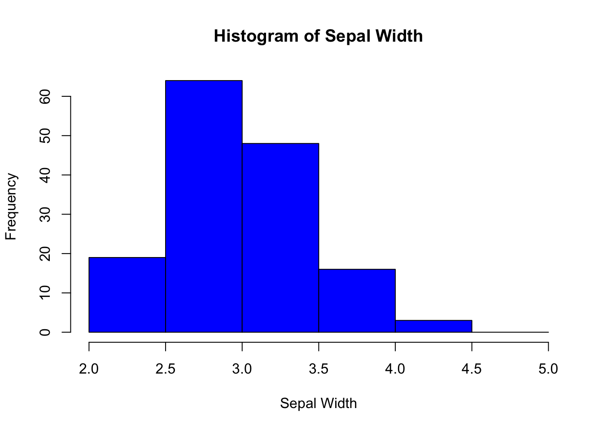
19.3.16.3 Boxplots
The boxplot() function creates a boxplot out of a numeric vector.
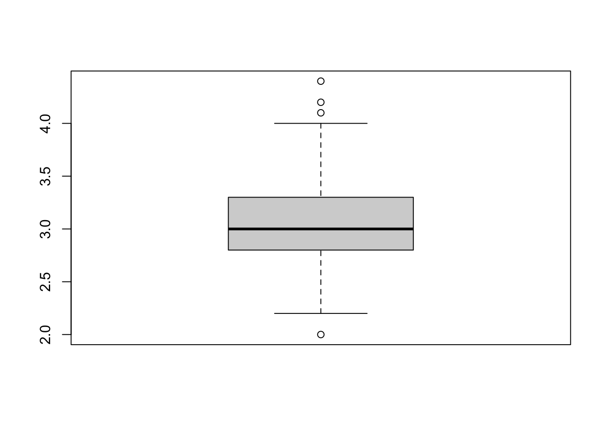
The thick horizontal line in the middle of the boxplot is the median of the Sepal Width. The upper line is the upper quartile, and the lower line is the lower quartile. The extended vertical lines are the "whiskers" of the boxplot. Data that are unusual(possible outliers) and lie outside of the whiskers are represented by dots.
You can also create boxplots for a numerical variable for each level of a categorical variable.
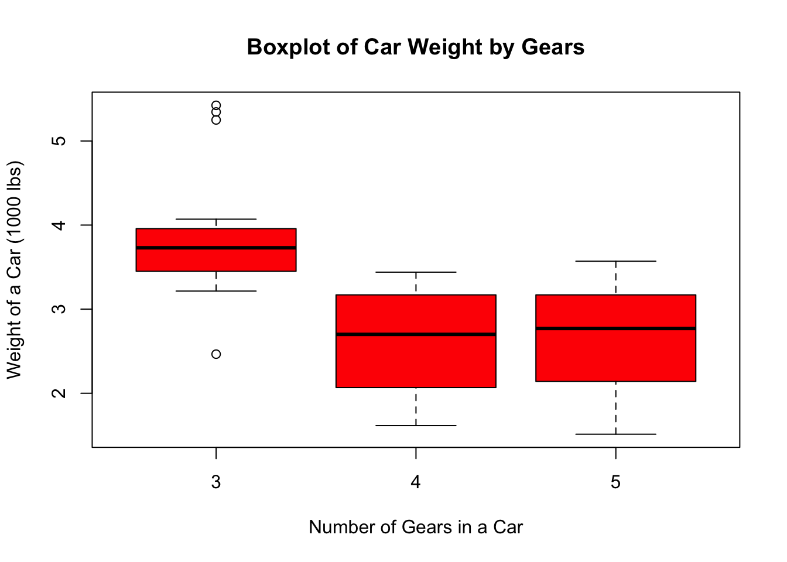
19.3.17 Downloading and Using Packages in R
To install a package for use in R, use the install.packages() function.
*The function's argument is the name of the package you want to download.
Once the package is installed on your device, you do not have to run the install.packages function again for this package.
To use the R package that you have installed, you must use the library() function to bring the library into your environment.
*If you know what packages you need before writing your code, import the packages at the beginning of your R script.
19.3.5 Comments
In the picture above, the line of code "5 + 5" was executed in R. Above that line is a comment, started using the pound, or hashtag, symbol (#). Comments are important in R programming, and are used to describe when the lines in your program do. Any text after a # symbol will not be executed in the code. R will skip over the comment and run the next available line of code.